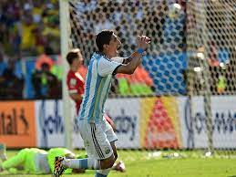

En el sorteo, Argentina le tocó el grupo F junto a Bosnia y Herzegovina, Irán y Nigeria. El seleccionado ganó los 3 partidos, quedando así primero de su grupo.
Octavos de Final
En los Octavos de Final, se enfrentó contra Suiza en un partido muy trabado que se extendió hasta el tiempo extra por un 0-0. Faltando 3 minutos para el silbatazo final, Di María soltó un latigazo que llevó a la Argentina a la victoria.

Cuartos de Final
En los Cuartos de Final, el albiceleste se enfrentó contra el seleccionado verga. A los 7 minutos del primer tiempo, Higuaín cazó un rebote, desprendió su diestra, y la pelota entró al segundo palo del arquero. El resultado siguió así hasta el final del partido.
Semifinal
Como es de costumbre, a la Argentina le encanta sufrir hasta el límite. Contra Holanda fue que nos encontramos en semifinales, el partido fue muy cerrado y con pocas ocasiones de gol. Una de ellas fue muy icónica ya que, Mascherano, le tapó en los últimos minutos le tapó una pelota a un delantero holandés. El encuentro se fue por 0-0 a penales, donde el arquero argentino dio una gran actuación tras salvar 2 penales, lo que llevó a la Argentina a la Gran Final.